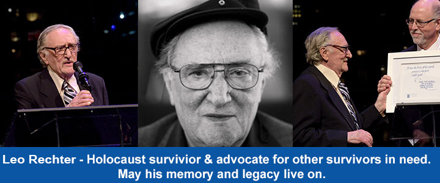

Blog Summary
We are so sad to hear that Leo Rechter, an amazing Holocaust survivor leader and Holocaust survivor himself, passed away this past weekend at age 93. Leo was a long-time advocacy for Holocaust survivors, taking a stand to protect and advance survivors’ rights, interests, and needs.
We are so sad to hear that Leo Rechter, an amazing Holocaust survivor leader and Holocaust survivor himself, passed away this past weekend at age 93. Leo was a long-time advocacy for Holocaust survivors, taking a stand to protect and advance survivors’ rights, interests, and needs. He was a long-time President of the National Association of Jewish Holocaust Survivors (NAHOS), and author of the NAHOS Newsletter. Just one year after The Blue Card Foundation honored Elie Wiesel, in 2016 Leo was awarded the same honors for his extraordinary contributions to support impoverished survivors, and his support of The Blue Card’s important mission of providing direct financial assistance to needy Holocaust survivors.
Leo was born to Jossel and Jyte Rechter, in Vienna, Austria, in 1927. Following Kristallnacht, and after local authorities brutally beat of his father, Leo and his family fled Vienna to Belgium, leaving all their possessions behind. When the Nazi invaded Belgium, his father was captured and sent to Auschwitz where he was killed. After the loss of his father, Leo, now 12, spent the rest of the War in Brussels in hiding as the sole support for his family. There they remained, running from secret place to secret place, always just ahead of the Gestapo and local authorities. Leo always put his mother and 2 younger siblings first, selling black market bread, refurbished clothing, and peddled cigarettes to provide and keep them safe. After the war, Leo went to Israel where he met the love of his life, Fortunee (Toni). In 1958, Leo and Fortunee decided to move to New York, got married, and started a new life together.
Leo’s final decades of hard work, focusing solely on those in need who could not ably represent themselves, epitomized all that is still good with humanity. Those who knew him, share his family’s everlasting respect, pride and deep appreciation for all that he has selflessly given to help others.
May his memory and legacy live on.
